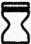
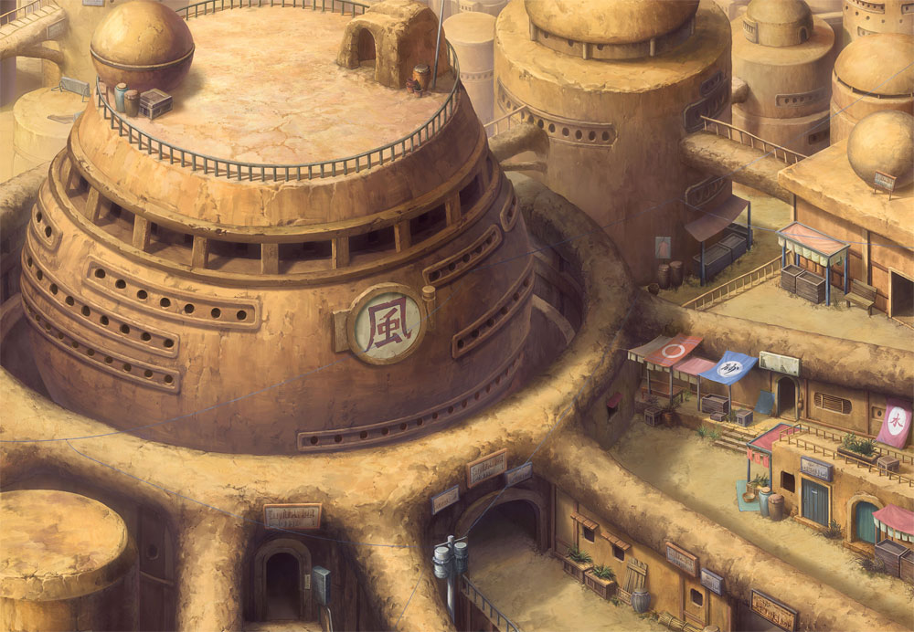

風之國
火影忍者世界中疆土最大的國家。該國地處荒漠，乾旱少雨，國民於綠洲建村，居住在砂子構建的特殊建築物內。風之國人口眾多，且和火之國關係密切。風之國的忍者村是砂忍者村，有很多實力強勁的忍者。風之國是該動漫系列中的一個相當重要的國家。
 砂忍者村
在風之國的忍者村。該處荒漠、乾旱少雨、沙塵飛舞的嚴苛環境，化為培育忍者的絕佳糧食。近來致力培育少數的精銳忍者，例如：我愛羅（一尾祭品之力）。忍者服裝顏色為砂黃色的護肩背心。 此外，他們亦創造出一種獨有的忍術－傀儡術，據說是由傀儡師文左衛門發明，曉之中赤砂蠍便是一名傀儡師。
